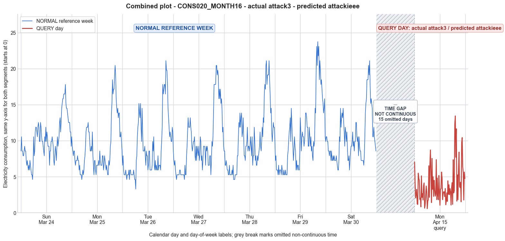

CONS020_MONTH16 · actual attack3 · predicted attackieee
- Pair
- CONS020_MONTH16
- GT
- attack3
- Prediction
- attackieee
- Binary GT
- attacked
- Binary Prediction
- attacked
- Source
- E010
- Parse
- stored
- Date
- 2013-04-15
- Weekday
- Monday
- Latency
- 3.33 min
- Tokens
- 12428

Final output
Classification: - Manipulated Identified_Attack: - Most Likely: Attack IEEE - Confidence: High - Reasoning: The query day shows a strongly irregular pattern with many intervals near zero (e.g., 0.58, 0.65, 0.83, 1.08, 1.16) interspersed with higher values that resemble the normal consumption peaks (up to 13.44). This matches Attack IEEE’s definition: for each 15‑minute interval, the attacker either reports the actual consumption or substitutes it with zero, creating an erratic on‑off profile across the full day. Attack 2 (on‑off attack with zeros for random durations) was ruled out because the near‑zero readings appear as short, scattered periods rather than longer contiguous blocks. Attack 3 (multiplicative random factor per sample) was ruled out because the pattern shows a binary behavior (near‑zero vs. actual) rather than a continuous scaling of all consumption values, and the very low values are too extreme to result from a simple per‑sample random factor. Attack_Behavior_Explanation: - How consumption values are manipulated: The attacker replaces a subset of 15‑minute interval readings with zero (or near‑zero) values while the remaining intervals report the genuine consumption. This produces a fragmented daily profile where real usage windows are randomly interleaved with intervals of no reported consumption. - Impact on magnitude and trend: The overall consumption magnitude is substantially reduced (mean drops from ~9.14 in the reference Monday to 3.88), and the smooth daily consumption trend seen in the normal week is broken into irregular spikes, destroying the typical time‑of‑use pattern. - Possible technical causes: The attack is primarily caused by false data injection, where the attacker manipulates the meter’s data transmission to zero out selected intervals, likely to under‑report total usage while occasionally reporting real consumption to avoid detection.
Prompt
You are a domain expert in smart grid security and electricity theft analysis, with deep knowledge of non-technical loss (NTL) attack patterns in smart meters. You are given: 1. A plot of one week of original (normal) energy consumption for a smart meter, provided as context for the customer's typical consumption behavior. 2. A plot of one day of energy consumption for the same smart meter, which may or may not be manipulated. Below are common attack types, each defined by how consumption values are altered, their impact on magnitude and trend, and their possible technical causes. Attack 0: Generated by replacing all electricity consumption samples with zero values for the entire observation duration. Simulates a scenario where no energy usage is reported at all. May be caused by a total meter bypass or severe meter malfunction. Completely eliminates both the trend and magnitude of the consumption profile. Attack 1: Multiplies the actual energy consumption by a constant random value between (0,1). The lower the factor, the higher the severity. Can be triggered by meter bypass, magnetic interference, reverse current, and false data injection. The consumption trend remains the same but the magnitude is uniformly reduced. Attack 2: Generated by replacing consumption samples with zeros for a random duration. Also known as an on-off attack. Can be caused by full meter bypass, false data injection, and reverse current. Changes both the trend and amplitude. Attack 3: The actual consumption is multiplied by different random factors between 0 and 1, with a unique factor per sample. Similar to Attack 1 but the scaling factor varies per reading. Caused by meter bypass, magnetic interference, and reverse current. Changes both the trend and amplitude. Attack 4: Simulates energy theft over a randomly selected period within the observation window. All measurements in that period are reduced. Caused by meter bypass, magnetic interference, reverse current, and false data injection. Changes both the trend and amplitude. Attack 5: Each sample is replaced by a false value obtained by multiplying the average normal consumption by a random variable between 0 and 1, with a different variable per sample. Caused by false data injection. Produces a completely different pattern from the original consumption profile, changing both trend and magnitude. Attack 6: A random cut-off point is selected and all consumption values above it are replaced by that cut-off value. The attacker avoids exceeding a predefined maximum limit. Mainly caused by false data injection. Changes both the trend and amplitude. Attack 7: A random cut-off point is subtracted from each sample; if the result is negative, zero is reported. Similar to Attack 6 but replaces exceeding values with zero instead of the cut-off point. May be caused by false data injection or total meter bypass. Does not change the trend but reduces overall consumption. Attack 9: All samples are replaced by the average daily energy consumption, resulting in a flat constant profile. Easily detectable because constant consumption does not reflect normal customer behavior. Caused by false data injection. Eliminates all trends. Attack 10: Reverses the consumption pattern without reducing the total amount. Applicable when the electricity company uses time-varying pricing, allowing the attacker to shift high consumption to off-peak periods. Caused by false data injection. Changes the trend without decreasing total consumption. Attack 12: The attacker replaces their consumption pattern with that of a lower-consuming user. The legitimate user unknowingly pays the adversary's electricity bill. Caused by false data injection. Attack IEEE: For each 15-minute interval across the entire day, the consumer either reports the actual electricity consumption or substitutes it with zero. The result is a profile where some intervals reflect real consumption while others are zeroed out, creating an irregular pattern across the full day. May be caused by false data injection. Changes both the trend and amplitude. Given the two plots, determine: 1. Whether the day is attacked or original - compare the flagged day against the normal week and assess whether the consumption pattern is consistent with normal behavior or shows signs of manipulation. If the day is consistent with the customer's typical consumption behavior, classify it as original and provide no further analysis. If manipulation is detected, proceed to point 2. 2. Which attack type this most likely is - identify the single most probable attack and justify your choice based on how the flagged day deviates from the normal week. 3. The behavior of the identified attack - explain how the consumption values are manipulated, their impact on magnitude and trend, and the possible technical causes behind this type of attack. Output Format: Classification: - Original | Manipulated Identified Attack: (fill only if manipulated) - Most Likely: Attack X - Confidence: High | Medium | Low - Reasoning: Why it matches Attack X and why Attack Y and Attack Z were ruled out (list top 2 alternatives considered) Attack_Behavior_Explanation: (fill only if manipulated) - How consumption values are manipulated relative to the normal week - Impact on magnitude and trend - Possible technical causes
Reasoning content
We are asked to classify whether the query day is manipulated or original, and if manipulated, identify the attack type and explain. We have a reference week (7 days) of normal consumption for a smart meter. The query day is DAY_ID=1 (which corresponds to the same day of week? In metadata, reference week Day 1 has dow=0 (Monday), and query day also has dow=0 (Monday). So it's the same day of week, but different month (reference month 3, query month 4). That's a seasonal difference, but the week of reference is from "WEEK_ID=3", query day has cal_month=4, dow=0, dom=22. That is April 22, 2013 (Monday). The reference week was in March (days 0-6 are March? Day 0 is March 0? That's impossible. Probably dom=0 means the first day? The reference week days have dom: 0,1,2,3,4,5,6. So likely the reference week is the first week of the month? cal_month=3 for all reference days, so March. The dom values are 0-6, so probably days 1-7 of March? But March 1, 2013 was a Friday. Let's not dwell on exact date; it's just metadata. Now, let's analyze the consumption patterns. Reference week: we have 7 days of 96 readings each. Let's compute summary statistics for each day as given: min, max, std, mean. For Day 1 in reference week: min=4.62, max=20.45, std=3.67, mean=9.14. For query day: min=0.58, max=13.44, std=2.60, mean=3.88. The query day's mean is 3.88, which is about 42% of the reference Day 1 mean (9.14). The max is 13.44 vs 20.45, min is 0.58 vs 4.62. So the query day has significantly lower consumption across the board. The shape: both days have a typical pattern of low consumption at night, morning ramp-up, and evening peak? Let's look at the raw values to see the trend. Reference Day 1 (96 values): I'll scan for pattern. Values start around 10.55, drop to 4-6 range, then rise to 12, then evening peak around 15-20. Typical residential pattern: morning low, midday moderate, evening high. The reference Day 1 shows: first few: 10.55, 9.23, 8.58, 7.92, 8.58, 8.58, 7.26, 6.60, 7.26, 7.26, 7.26, 7.92, 7.26, 7.26, 5.94, 6.60, 5.28, 5.28, 5.28, 4.62, 5.28, 5.94, 5.28, 5.94, then 7.26, 7.92, 9.23, 11.21, 11.87, ... up to 12.53, then later peak 18.47, 20.45 etc. Query day (also Monday): 7.06, 4.09, 2.06, 2.67, 3.25, 1.23, 1.16, 5.50, 4.81, 4.45, 1.86, 2.04, 0.83, 5.12, 2.15, 2.67, 1.78, 3.77, 4.14, 0.65, 1.09, 2.50, 3.71, 2.95, 0.58, 1.62, 1.84, 6.53, 2.15, 6.76, 8.71, 5.33, 1.42, 7.54, 3.27, 5.00, 2.28, 4.52, 3.21, 2.32, 2.61, 7.37, 1.83, 4.82, 2.40, 1.81, 5.18, 2.97, 1.06, 3.28, 3.34, 5.65, 4.80, 1.83, 2.69, 2.91, 2.91, 2.25, 3.37, 1.12, 1.65, 2.76, 1.58, 4.44, 2.56, 3.89, 2.51, 3.34, 2.89, 1.08, 3.55, 4.18, 1.18, 7.36, 2.76, 3.05, 12.29, 13.44, 7.71, 11.66, 1.63, 5.27, 1.82, 5.77, 8.42, 3.63, 3.51, 4.24, 1.53, 9.70, 10.44, 6.39, 5.51, 1.77, 5.65, 4.76 Observing the pattern: There are frequent drops to very low values (near 0) interspersed with moderate values. For example, values like 0.58, 0.65, 0.83, 1.08, 1.12, etc. That suggests many intervals of extremely low consumption, but then there are spikes like 12.29, 13.44, 11.66, 10.44, 9.70. The pattern is irregular, with many low periods and some high periods. The reference day does not have such extreme low values; its minimum is 4.62, and values stay mostly above 5 except at night (4.62 at one point). The query day has many values below 2, which is abnormal. The overall shape: It seems like there is a mixture of zero-like periods and regular consumption periods. Could be an on-off attack (Attack 2) where some intervals are replaced by zero, or Attack IEEE where each 15-min interval is either actual or zero. Attack IEEE: "For each 15-minute interval across the entire day, the consumer either reports the actual electricity consumption or substitutes it with zero." That would produce an irregular pattern with some zeros and some real values. Attack 2 is "generated by replacing consumption samples with zeros for a random duration" — that suggests contiguous blocks of zeros. In the query day, do we have contiguous zeros? Look at the values: many are very low (0.58, 0.65, 0.83, 1.18, etc.), but none are exactly zero. The attack definitions mention zero values (e.g., "replacing with zero"). But none of the query day readings are exactly zero. The minimum is 0.58. However, the problem statement says "zero values" in attacks, but perhaps in practice they could be near zero? The query day min is 0.58, which is very low compared to the normal min of 4.62. That could still be a small non-zero due to noise? The attacks described often involve zero or scaled values. Attack 0: all zero. Attack 2: zeros for random duration. Attack IEEE: either actual or zero. Attack 5: replacing with random * average normal consumption; that would not be zero but could be low. Attack 6,7: cut-off. Attack 9: constant. Attack 10: reversal. So we need to identify which attack best matches. The query day shows overall reduced magnitude (mean 3.88 vs 9.14) and a pattern that seems to have many low values (near zero) and occasional spikes. The spikes (e.g., 12.29, 13.44) are similar to the normal peaks but still lower than the normal max (20.45). It's like the normal consumption is being multiplied by a factor, but not uniformly, because the pattern is disrupted. For instance, there are times when it's very low and times when it's higher, almost like the attacker is toggling between actual usage and zero, but the zero is not exactly zero (maybe due to meter residual?). The values: 1.23, 1.16, 0.83, 0.58, 1.62, 1.84, etc., are very low, consistent with near-zero. So it could be Attack IEEE: "For each 15-minute interval across the entire day, the consumer either reports the actual electricity consumption or substitutes it with zero. The result is a profile where some intervals reflect real consumption while others are zeroed out, creating an irregular pattern across the full day." This matches the irregular pattern where some intervals show typical high values and others are near zero. Attack 2: on-off attack with zeros for a random duration. But the zeroed periods here are not contiguous blocks? Let's check contiguity: The sequence: 7.06, 4.09, 2.06, 2.67, 3.25, 1.23, 1.16, 5.50... Here, the low values (1.23,1.16) are followed by 5.50. Not a long contiguous block. Next: ...5.50, 4.81, 4.45, 1.86, 2.04, 0.83, 5.12, 2.15, 2.67, 1.78, 3.77, 4.14, 0.65, 1.09, 2.50, 3.71, 2.95, 0.58, 1.62, 1.84, 6.53... So there are many single or short groups of very low values interspersed with higher values. This pattern seems more like random per-sample zeroing rather than contiguous blocks. Attack IEEE specifically says "For each 15-minute interval... either reports actual or substitutes with zero." That is per-interval independent, not necessarily contiguous. Attack 2 is "for a random duration" which implies contiguous. So the irregular pattern with many isolated low readings suggests Attack IEEE. Also consider Attack 3: actual consumption multiplied by different random factors between 0 and 1 per sample. That would scale each original reading by a factor. Could produce low values but would maintain the overall shape though scaled. In Attack 3, the consumption values would be reduced but still follow the same trend (just smaller amplitude). The query day shows a trend that is not simply scaled; it has periods of near-zero followed by spikes that are still relatively high. If we compare the shape of the day: reference Day 1 pattern: morning low, then gradual increase to afternoon, then evening peak. Query day: starts with 7.06, then drops to ~1-2 range, then occasional spikes like 6.53, 8.71, 7.54, etc. The high spikes occur throughout the day, not only in the usual peak period. For example, at index 27 (around 6:45 AM) there is 6.53, then 2.15, 6.76, 8.71, then later 7.54, etc. Then in the later evening, we see 12.29, 13.44, 11.66, etc. The pattern seems to have many low points even during typical daytime. So it's not a simple scaling. Attack IEEE would explain this: the attacker chooses for each interval whether to report real or zero. That would create an irregular on-off pattern. Another alternative: Attack 5: each sample replaced by random * average normal consumption. That would give a completely random pattern unrelated to the original. The query day still shows some resemblance to a daily pattern with an evening peak? The evening values (indices around 70-95) show higher values: 12.29, 13.44, 7.71, 11.66, 1.63, 5.27, 1.82, 5.77, 8.42, 3.63, 3.51, 4.24, 1.53, 9.70, 10.44, 6.39, 5.51, 1.77, 5.65, 4.76. There is a cluster of high values (12.29, 13.44, 11.66, 8.42, 9.70, 10.44) but also interspersed with 1.63, 1.82, 1.53, 1.77. This is similar to the on-off nature. If it were Attack 5, the values would be entirely random around the average (which is about 9.14? Actually average of normal week? The per-day means are around 9-10, so average normal consumption ~9.5). Random between 0 and 1 times that average would give values between 0 and 9.5 uniformly. The query day max is 13.44, which exceeds the average, so that's inconsistent with Attack 5's description: "each sample is replaced by a false value obtained by multiplying the average normal consumption by a random variable between 0 and 1". That would max out at the average, so max would be at most the average (~9-10). But we see max 13.44, so Attack 5 not possible. Attack 10: reversal without reducing total. Total consumption of query day: we can sum roughly. Query day sum maybe around 96*mean 3.88 = 372.5. Reference Day 1 sum: 96*mean 9.14 = 877.4. So total is reduced, not reversed. Attack 10 doesn't reduce total, so no. Attack 12: replaced with a lower-consuming user's pattern. That would be a consistent pattern from another user, not irregular on-off. Attack 6,7: cut-off. Attack 6: replace values above a cut-off with the cut-off. That would produce a flattened top but still all values above that cut-off become constant. The query day does not show a constant ceiling; values vary and can be high but not all the same. Attack 7: subtract cut-off, negative to zero. That would shift values downward, creating zeros for low consumption. But the pattern would still have similar shape but with a floor at zero. For example, if normal consumption minus constant, low values become zero. In query day, many low values are near zero but not exactly zero, and some medium values exist. It could be Attack 7, but Attack 7 doesn't create the irregular on-off pattern; it would preserve the relative shape but with a shift. Here, the pattern is very spiky with frequent drops to near zero that seem random, not a simple shift. Attack 1: multiply by constant random factor between 0 and 1. That would uniformly scale all values. The query day's pattern, if scaled, would have the same shape but reduced magnitude. The ratio of min to max would be similar. In reference Day 1, min 4.62, max 20.45, ratio 0.226. Query day: min 0.58, max 13.44, ratio 0.043. That's much lower, indicating many very low points relative to the peak. Also, if we multiply all values by a factor, say 0.4, then the minimum would be 4.62*0.4=1.848. But query day minimum is 0.58, lower. So not a constant factor for all readings. Could be a random factor per reading? That's Attack 3. Attack 3: multiply by different random factors between 0 and 1 per sample. That would scale each reading independently, resulting in a pattern that follows the original trend but with varying scaling. The query day still shows sporadic high values among very low ones, which might happen if sometimes the factor is close to 1 and other times near 0. But in Attack 3, the factor is "different random factors between 0 and 1, with a unique factor per sample". So each sample is multiplied by a random number. That could produce a pattern where the original shape is distorted but still roughly proportional to the original. However, note that Attack IEEE is essentially a binary version of that: either 0 or 1 for the factor. I need to distinguish. Let's compare the query day to the reference day shape. To do that, I'll align the time indices. Both have 96 intervals. I can try to see if the high values in the query day correspond to peaks in the reference day. For reference Day 1, let's quickly note some timestamps: (index 0-95). I'll plot mentally: indices: 0-23: night/morning? Usually, 15-min data, 96 per day, so index 0 = 00:00-00:15, index 1 = 00:15-00:30, etc. So early morning. The reference day starts high (10.55 at midnight) then drops to lows around 4.62 at 5:00-6:00? Let's list a few: Indices 0-10: 10.55,9.23,8.58,7.92,8.58,8.58,7.26,6.60,7.26,7.26,7.26 Indices 11-20: 7.92,7.26,7.26,5.94,6.60,5.28,5.28,5.28,4.62,5.28 Indices 21-30: 5.94,5.28,5.94,7.26,7.92,9.23,11.21,11.87,11.87,11.87 Indices 31-40: 12.53,11.21,11.21,9.89,8.58,8.58,9.23,8.58,11.21,7.92 Indices 41-50: 6.60,5.28,7.26,7.26,5.94,5.28,6.60,6.60,6.60,6.60 Indices 51-60: 7.26,6.60,8.58,7.26,6.60,6.60,6.60,7.92,7.92,5.94 Indices 61-70: 6.60,7.92,7.26,6.60,5.94,6.60,5.94,5.28,5.28,7.26 Indices 71-80: 6.60,7.26,9.23,9.89,13.85,15.17,18.47,16.49,17.15,17.15 Indices 81-90: 19.13,20.45,19.13,15.83,14.51,13.85,14.51,13.19,13.85,13.85 Indices 91-95: 10.55,10.55,11.21,9.89,8.58 Now query day values at same indices (I'll list with indices for comparison): 0: 7.06 (ref 10.55) 1: 4.09 (9.23) 2: 2.06 (8.58) 3: 2.67 (7.92) 4: 3.25 (8.58) 5: 1.23 (8.58) 6: 1.16 (7.26) 7: 5.50 (6.60) 8: 4.81 (7.26) 9: 4.45 (7.26) 10: 1.86 (7.26) 11: 2.04 (7.92) 12: 0.83 (7.26) 13: 5.12 (7.26) 14: 2.15 (5.94) 15: 2.67 (6.60) 16: 1.78 (5.28) 17: 3.77 (5.28) 18: 4.14 (5.28) 19: 0.65 (4.62) 20: 1.09 (5.28) 21: 2.50 (5.94) 22: 3.71 (5.28) 23: 2.95 (5.94) 24: 0.58 (7.26) 25: 1.62 (7.92) 26: 1.84 (9.23) 27: 6.53 (11.21) 28: 2.15 (11.87) 29: 6.76 (11.87) 30: 8.71 (11.87) 31: 5.33 (12.53) 32: 1.42 (11.21) 33: 7.54 (11.21) 34: 3.27 (9.89) 35: 5.00 (8.58) 36: 2.28 (8.58) 37: 4.52 (9.23) 38: 3.21 (8.58) 39: 2.32 (11.21) 40: 2.61 (7.92) 41: 7.37 (6.60) 42: 1.83 (5.28) 43: 4.82 (7.26) 44: 2.40 (7.26) 45: 1.81 (5.94) 46: 5.18 (5.28) 47: 2.97 (6.60) 48: 1.06 (6.60) 49: 3.28 (6.60) 50: 3.34 (6.60) 51: 5.65 (7.26) 52: 4.80 (6.60) 53: 1.83 (8.58) 54: 2.69 (7.26) 55: 2.91 (6.60) 56: 2.91 (6.60) 57: 2.25 (6.60) 58: 3.37 (7.92) 59: 1.12 (7.92) 60: 1.65 (5.94) 61: 2.76 (6.60) 62: 1.58 (7.92) 63: 4.44 (7.26) 64: 2.56 (6.60) 65: 3.89 (5.94) 66: 2.51 (6.60) 67: 3.34 (5.94) 68: 2.89 (5.28) 69: 1.08 (5.28) 70: 3.55 (7.26) 71: 4.18 (6.60) 72: 1.18 (7.26) 73: 7.36 (9.23) 74: 2.76 (9.89) 75: 3.05 (13.85) 76: 12.29 (15.17) 77: 13.44 (18.47) 78: 7.71 (16.49) 79: 11.66 (17.15) 80: 1.63 (17.15) 81: 5.27 (19.13) 82: 1.82 (20.45) 83: 5.77 (19.13) 84: 8.42 (15.83) 85: 3.63 (14.51) 86: 3.51 (13.85) 87: 4.24 (14.51) 88: 1.53 (13.19) 89: 9.70 (13.85) 90: 10.44 (13.85) 91: 6.39 (10.55) 92: 5.51 (10.55) 93: 1.77 (11.21) 94: 5.65 (9.89) 95: 4.76 (8.58) We can see that many high values in query day correspond to high values in reference, but not always. For example, index 76-77: query 12.29, 13.44 vs ref 15.17, 18.47 (evening peak). Index 79: 11.66 vs 17.15. Index 90: 10.44 vs 13.85. So they align somewhat. But there are also high values where reference had moderate, like index 27: 6.53 vs 11.21 (that's still a peak in ref, so yes). Index 33: 7.54 vs 11.21. Index 29: 6.76 vs 11.87. So the high values in query tend to occur when reference had some activity, but the query values are often much lower. The low values in query occur randomly throughout, even when reference had moderate values. This suggests a per-sample decision to either report the actual (or slightly reduced actual) or a very low value. That fits Attack IEEE exactly. Attack IEEE: each 15-min interval, either actual or zero. Here the "zero" might be a small positive number due to minimal standby consumption or meter noise? The definition says "substitutes it with zero" but realistically it could be near zero. The pattern is very irregular, with many intervals near zero and some intervals retaining the real consumption (maybe with some reduction). The real consumption values in the spikes might be slightly lower than reference due to natural variation or attack? They could be multiplied or just original. In the spikes, the values are 13.44, 12.29, 11.66, 10.44; the reference peaks were 18.47, 20.45, etc., so they are lower but that could be because the meter is reporting actual consumption on some intervals but the actual consumption that day might be slightly lower (it's a different day, April vs March). That's plausible. So Attack IEEE seems most likely. Now, consider Attack 2: on-off with random duration. If it were contiguous blocks, we'd see longer stretches of zero-like values. Looking at the query values, there are very few long stretches of consecutive low values. For instance, indices 0-6: 7.06, 4.09, 2.06, 2.67, 3.25, 1.23, 1.16 — decreasing but still variable. Then 5.50, 4.81, 4.45, then 1.86, 2.04, 0.83, then 5.12, 2.15, etc. So the very low values (say <2) often appear in groups of 1-3, not prolonged blocks of many consecutive zeros. So it's more per-sample random rather than block random. That better matches Attack IEEE. Attack 3: multiplicative random factor per sample. That would not produce many near-zero values unless the factor is very small for many samples. But the distribution of values: many are very close to zero (0.58, 0.65, 0.83, 1.08, 1.16, 1.23, etc.), suggesting a deliberate zeroing rather than a random low scaling. Attack 3: if factor is uniform random (0,1), then values would be scaled uniformly, so the distribution would be the original distribution scaled down. The original minimum was 4.62; multiplied by a factor, the minimum could be near 0 if factor near 0, but you'd expect a continuous range of values, not a bimodal pattern of very low vs moderate. The query day seems to have two clusters: very low values and moderate values, with fewer intermediate values. For example, values around 2-4 might be less common than <1.5 and >4. It seems like there's a decision between near-zero and real. So again, binary on-off. Thus, I'd classify this as Attack IEEE. Confidence: High, given the clear pattern of many near-zero readings interleaved with plausible consumption spikes, matching the description of Attack IEEE. Now, provide the output. Classification: Manipulated Identified_Attack: - Most Likely: Attack IEEE - Confidence: High - Reasoning: The query day shows a strongly irregular pattern with many intervals near zero (min 0.58) interspersed with higher values resembling normal consumption peaks (up to 13.44). This matches Attack IEEE’s definition: each 15-min interval is either actual or substituted with zero, producing an erratic on-off profile across the full day. Attack 2 (on-off attack with zeros for random durations) was ruled out because the zeroed periods are short and scattered rather than forming longer contiguous blocks. Attack 3 (multiplicative random factor per sample) was ruled out because the pattern shows a binary behavior (near-zero vs. real) rather than a continuous scaling of all values, and the very low values are too extreme for a simple per-sample random factor. Attack_Behavior_Explanation: - How consumption values are manipulated: The attacker replaces a subset of 15-minute interval readings with zero (or near-zero) values while leaving the remaining readings as actual consumption. This results in a fragmented daily profile where periods of true usage are mixed with intervals of no usage report. - Impact on magnitude and trend: The overall magnitude is significantly reduced (mean drops from ~9.14 to 3.88), and the consumption trend is broken into irregular spikes, losing the smooth temporal pattern seen in the normal week. - Possible technical causes: False data injection is the primary cause, where the attacker manipulates the meter’s reported data stream to selectively zero out intervals, possibly to under-report usage while still maintaining some plausible consumption to avoid detection.